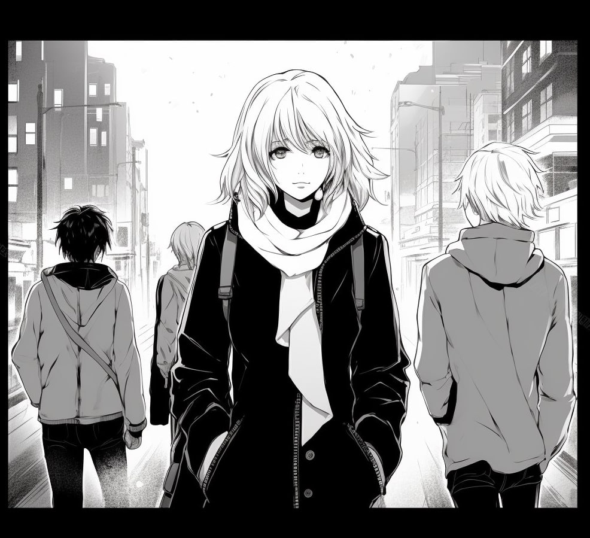

Придя домой, я стала быстро выполнять домашние дела.
И вот, через некоторое время, я за компом вместе с домашними призраками за спиной.
Им интересно наблюдать, во что сайчас играют люди, да и впринципе что они делают.
Именно поэтому иногда у вас может возникать чуство, что за вами наблюдают, хотя в комнате никого нет.